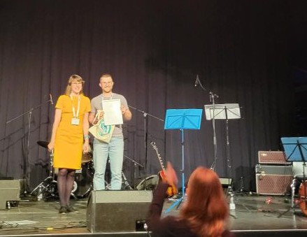
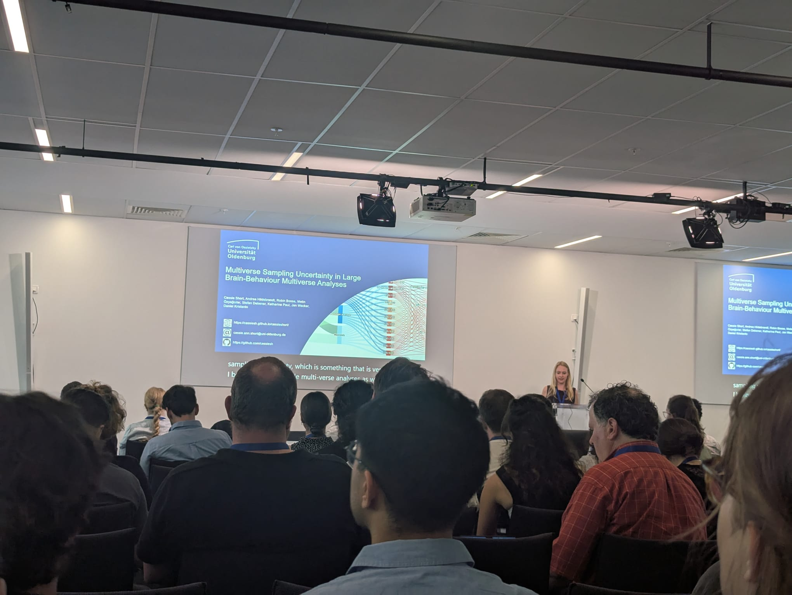
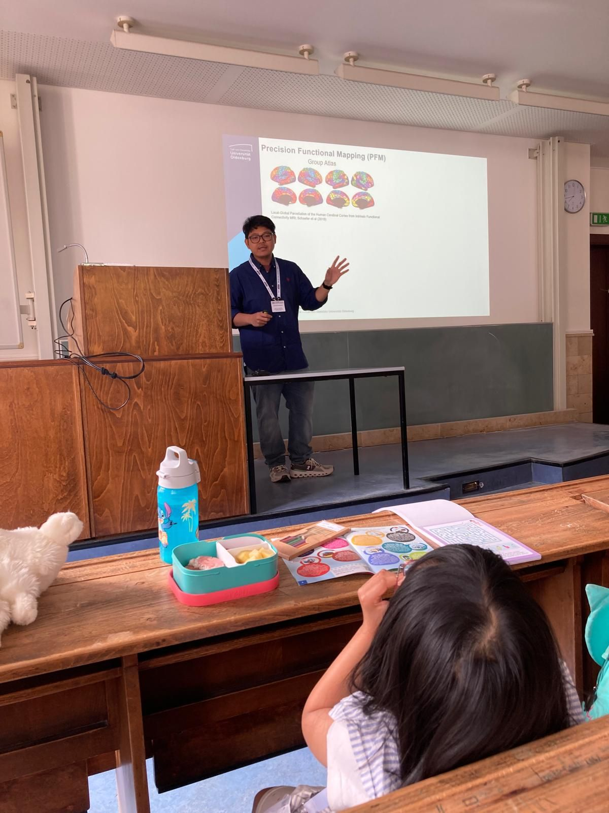
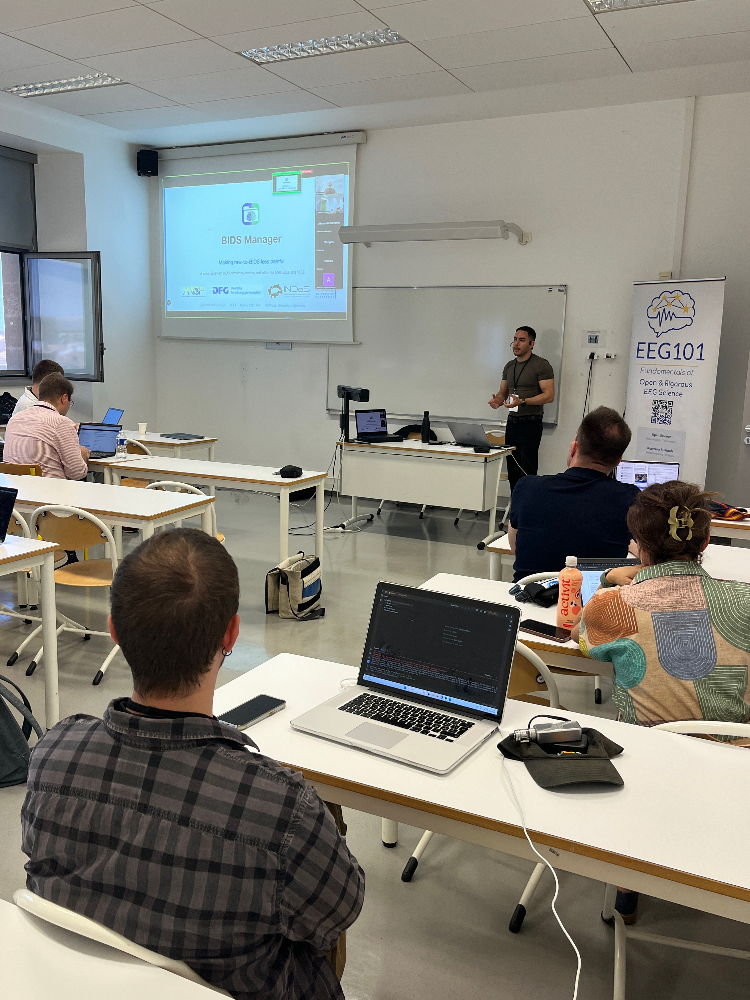

- [AWARDS] Let's kick off with a massive winning streak from our members. The Society for Improving Psychological Science (SIPS) awarded a 2026 Commendation to the presenters of Love Replications Week. This group includes Cassie. This recognition highlights the immense value of collaborative efforts in pushing psychological science toward better reproducibility. A huge congratulations to Cassie and the entire team for this achievement! The awards just kept coming. Micha took home the Open Science Award at the recent Psychology and Brain (PuG) conference! He received this honor for his outstanding work developing a toolbox for dynamic functional connectivity. You can check out his COMET toolbox publication. We are incredibly proud to see our department's methodological tools recognized on such a large stage. Melanie also secured a major win, taking home the 2nd prize MoBI Award at the MoBI 2026 conference. This prize recognizes her award-winning paper investigating the use of mobile EEG for the study of cognitive-motor interference during swimming. You can view the award details on the MoBI submissions page. Congratulations, Melanie, on this well-deserved recognition of your hard work!
- [Neuroimaging dataset workshop] Beyond awards, we have been busy sharing skills. On May 19th, Amir, Micha, Sumbul, Wolf, and Karel hosted a highly practical workshop focused on open neuroimaging datasets. They went beyond simply showing attendees where to find open data. Participants actually got their hands dirty learning how to access and actively analyze these large-scale resources. If you missed it, do not worry. We will make all the workshop materials available on the OSIG website soon.
- [Conferences] We also had a massive presence at recent major conferences. A large delegation from our department traveled to the Organization for Human Brain Mapping (OHBM) meeting. While there, Cassie was invited to upgrade her poster to a full talk! She presented her research on 'Multiverse Sampling Uncertainty in Large Brain-Behaviour Multiverse Analyses,' based on her recent paper. Karel also made a huge impact at the OHBM BrainHack, delivering two hands-on workshops on open and reproducible neuroimaging workflows (we have included the full details on his sessions below!). Meanwhile, Julius, Cassie, and Daniel attended the PuG conference. Speaking of PuG, get ready. Next year's conference will be hosted right here in Oldenburg!
- [Workshop in Hearing4All Summer Symposium] Sarah ran a fantastic workshop at the Hearing4All Summer Symposium. She focused on Mobile Neuroscience in Android, showcasing free, open-source apps developed right here in the Neuropsychology lab. These tools let researchers record and stream biosignals using the Lab Streaming Layer (LSL) directly from a smartphone-no bulky laptop required. Want to try them out? Visit the project landing page to download the apps and see exactly how they work.
- [OHBM brainHack workshop] At OHBM BrainHack 2026, Karel contributed to the collaboration between INDoS (COST Action CA24161), EEG101 (COST Action CA21147), and BrainHack by delivering two hands-on workshops focused on open and reproducible neuroimaging workflows. His first workshop introduced BIDS Manager, a software package that simplifies raw-to-BIDS conversion and dataset curation across MRI, MEG, EEG, and physiological recordings. The session demonstrated an interactive workflow for data conversion, metadata editing, BIDS validation, and dataset review. Documentation: BIDS Manager documentation. The second workshop presented MEEGqc, a BIDS-aligned toolbox for standardized quality assessment (QA) and quality control (QC) of MEG and EEG data. Participants explored how the software generates interactive quality reports and machine-readable derivatives to support transparent and reproducible quality evaluation at both the subject and dataset levels. Documentation: MEEGqc documentation. Both workshops were very well received by the community, generating engaging discussions, valuable feedback, and new ideas for future development. The sessions highlighted the importance of open-source, standards-based tools for improving data quality, interoperability, and reproducibility in neuroimaging research.



